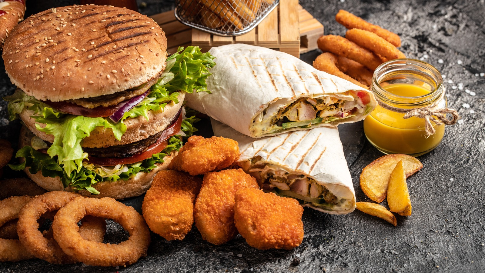

About LTS
LTS was found in . Our shop bukit from a love of Fast Foods. We hope our shop adds a unique and interesting place to our little town.

LTS was found in . Our shop bukit from a love of Fast Foods. We hope our shop adds a unique and interesting place to our little town.